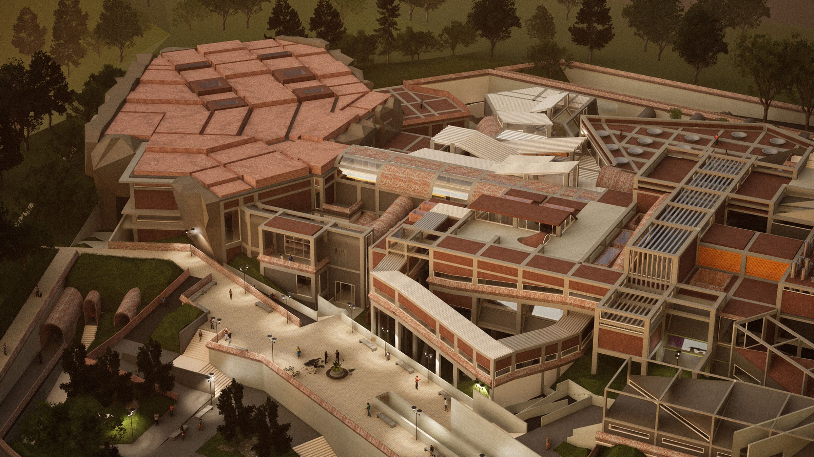

Islamabad is a capital drawn on a grid. Rawalpindi is an old city that grew lane by lane. This thesis places a concert hall between them and asks what an architecture of both cities would sound like.
The project reads the pair through Nietzsche's Apollonian and Dionysian: Islamabad as order and form, Androon Rawalpindi as the crowd and the music that breaks it open. It does not imitate either city. The design works inside out and part to whole, takes its forms from the terrain of Shakarparian, and is built in brick and concrete.
[site]
Shakarparian is a wooded ridge on the edge of Islamabad, where the capital meets Rawalpindi. The Margalla Hills rise behind the city to the north, and the twin cities spread out below. The site is a seven-sided parcel on contoured ground, reached from the Islamabad Expressway, Srinagar Highway, Murree Road and Garden Avenue.
[two cities]
Mapped side by side, the two cities are opposites. Islamabad's sectors are wide, ordered and repetitive. Rawalpindi's old city is dense, irregular and continuous, grown lane by lane rather than drawn.
For fieldwork, Wajahat walked the streets of Androon Rawalpindi, talked with the people he met and photographed what he saw. Above the lanes, wires and poles were tangled across the street, chaotic but still standing. That image became the basis for the building's structure.
[concept]
The thesis reads the twin cities through Nietzsche's Apollonian and Dionysian. The Apollonian stands for order, measure and form; the Dionysian for the crowd, intoxication and music. Islamabad becomes the Apollonian ground. Androon Rawalpindi is the Dionysian force that ruptures it.
Two grids set the rules. The first is Islamabad's own grid, extended literally onto the site. It becomes a linear concrete frame of columns and beams that holds every passage and corridor. The second is drawn by connecting the corners of the seven-sided site boundary. It is a reference only, used to decide where the plan may bend away from the first grid.
Into this order the old city is thrust: heavy vaults, fragmented corrugated roofs taken from the dhabbas of Androon Pindi, and lanes modelled on Raja Bazaar. The method is a narrative plus a base set of rules, bent wherever the space or the programme asks for it.
[process]
Early models tested the collision at full intensity: an orthogonal frame struck by red Dionysian planes. Interior studies then asked what it would feel like to stand inside the rupture, among beams and walls at conflicting angles.
[the building]
The complex brings together a main concert hall, rehearsal spaces, a museum, a souvenir bazaar, an artist residence, an amphitheatre and rooftop communal spaces. Visitors reach the hall along a corridor journey modelled on Raja Bazaar, through split levels and across bridges.
Every beam and column is exposed. Beams from one space run on into the next, so the structure cuts through rooms visually the way wires cross a street in Androon Pindi. From above, the pink concert hall roof reads like the planning blocks of the old city, while the white fragmented roofs behind it are drawn from the dhabba.
In the rehearsal spaces the floor is jagged, so musicians can sit or lie down to play. Corridors above act as viewing decks, where the public watch musicians practise on their way to a concert. A heavy vault ramps down through the artist residence to the backstage of the hall, cutting into the landscape. Along the descent, recreation spots sit in the contours on one side and open-air rehearsal spaces under corrugated roofs on I-beams on the other.
[3d model]
Two sections cut from the model prepared for the 3D print. Drag to orbit, scroll or pinch to zoom, right-drag to pan.
[drawings]
The plans and sections show the two grids at work: an orthogonal frame on the Islamabad grid, bent and broken where the old city enters and where the ground falls away.
[renders]
Rendered in Twinmotion. Brick and exposed concrete throughout, with the frame visible overhead.